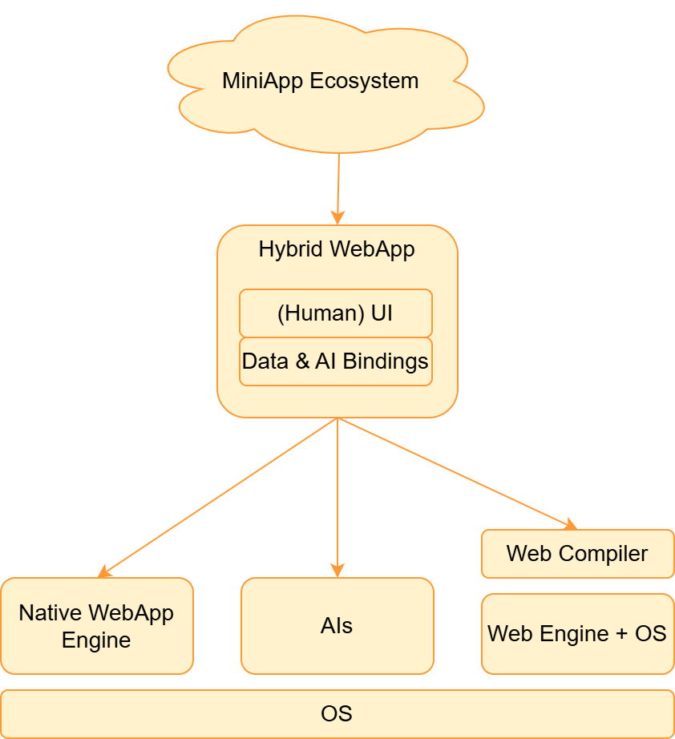

Breakout Days 2026
online
25 March 2026
| 🧬 | Lifecycle | installation, super-app context,.. |
| 📦 | Distribution | compression, signatures, origin preservation... |
| 🪧 | Metadata | permissions, setup... |
| 👩💻 | Reusability | components, APIs |
| 🔗 | Addressing | versions, deeplinking... |
| 🖼️ | Widgets | across OSs |
| ♿ | Accessibility | apps more inclusive |
| Challenge | MiniApps WG | Still Missing | |
|---|---|---|---|
| 🧬 | Lifecycle | ✅ DOM Events | 🆘 non-standard |
| 📦 | Distribution | ✅ ZIP + signatures | 🆘 Origin model |
| 🪧 | Metadata | ✅ Web App Manifest | |
| 👩💻 | Reusability | ❌ DSL, different APIs | 🆘 HTML/API subsets |
| 🔗 | Addressing | ✅ URL schema | |
| ♿ | Accessibility | ❌ role | 🆘 HTML semantics |
| 🖼️ | Widgets | ❌ Requirements | |
| Challenge | MiniApps WG | Still Missing | PWA+IWA | |
|---|---|---|---|---|
| 🧬 | Lifecycle | ✅ DOM Events | 🆘 non-standard | ✅ Standards |
| 📦 | Distribution | ✅ ZIP + sig. | 🆘 Origin model | ✅ CSP |
| 🪧 | Metadata | ✅ Manifest | ||
| 👩💻 | Reusability | ❌ non-standard | 🆘 HTML/APIs | ✅ Standards |
| 🔗 | Addressing | ✅ URL schema | ✅ URL schema | |
| ♿ | Accessibility | ❌ role | 🆘 HTML semantics | ✅ Standards |
| 🖼️ | Widgets | ❌ Requirements | ||

This presentation:
http://espinr.github.io/talks/2026/0325_MiniApps_Breakout
Reader(s): To start the slide show, press ‘A’. Return to the index with ‘A’ or ‘Esc’. On a touch screen, use a 3-finger touch. Double click to open a specific slide. In slide mode, press ‘?’ (question mark) to get a list of available commands. To start the slide show, press Shift+F5 (Command+Enter on Mac). Return to the index by pressing ‘Esc’. You can also click to open a specific slide.
If it doesn't work: Slide mode requires a recent browser with JavaScript. If you are using the ‘NoScript’ add-on (Firefox or the Tor Browser), or changed the ‘site settings’ (Chrome, Vivaldi, Opera, Brave and some other browsers), or the ‘permissions for this site’ (Edge), you may have to explicitly allow JavaScript on these slides. Internet Explorer is not supported.